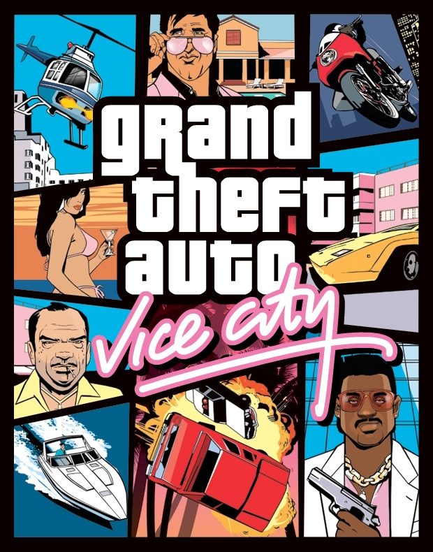

Grand Theft Auto (GTA) is a series of action-adventure games created by David Jones and Mike Dailly.[2] Later titles were developed under the oversight of brothers Dan and Sam Houser, Leslie Benzies and Aaron Garbut. It is primarily developed by British development house Rockstar North (formerly DMA Design), and published by its parent company, Rockstar Games. The name of the series references the term "grand theft auto", used in the United States for motor vehicle theft.
GTA Vice City

Noted for being one of the most popular Grand Theft Auto games and also being the best selling game in 2002, Vice City follows Tommy Vercetti after he’s released from prison.The world is a lot different from what it was 15 years ago and it’s time for Tommy to get back to his criminal ways with the help of Sonny Forelli.
It starts with a typical drug job before things go pear-shaped and he’s left struggling to make things rightTo get his money back, Tommy has to go through the heart of Vice City and the path is laced with danger.
Whether it’s the gangsters, bikers, Cubans, or politicians, there’s always someone looking to get in Tommy’s way as he tries to get what he wants.
Players enjoy access to a wide array of features in this version including the ability to hop onto two-wheeled vehicles including motorcycles.
Speed around town completing missions while getting to make the most of these fascinating vehicles. For those who want to head up into the sky, this game ensures Tommy gets to fly small planes and helicopters while jumping to different parts of Vice City.
GTA San Andreas
Situated during the 1990s, Grand Theft Auto: San Andreas is a unique take at action, thrills, and loads of unfiltered emotion.
Set in the hands of Carl Johnson (C.J.), the player spends time in San Andreas after moving back from Liberty City. Being a former gang member, Carl Johnson walks into loads of trouble as he learns more about his past and everything that led to his mother’s death.
As he attends the funeral, Carl begins to understand what went wrong and how the police didn’t do its job. This game takes players on a journey as Carl aims to avenge the death and make things right again.